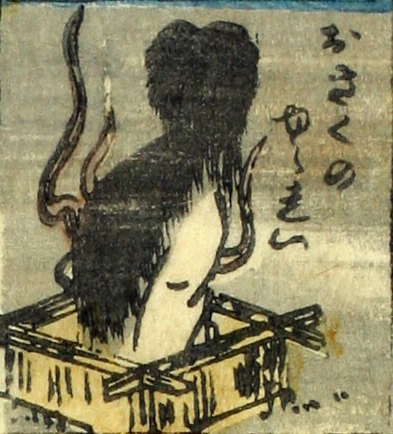

お菊；オキク，女；オンナ

お菊の幽霊。髪が長く、白い着物をまとった女が、井戸の中から現れている。周りに炎のようなものが立ち上っている。お菊はこちらに背を向けており、その表情をうかがうことはできない。
著作者：芳盛／出典：親書誌：U426_nichibunken_0073：しん板化物尽し；シンパンバケモノヅクシ／日付：2006／資源識別子：U426_nichibunken_0073_0019_0000
Copyright (c)2010- International Research Center for Japanese Studies, Kyoto, Japan. All rights reserved.